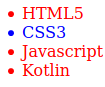
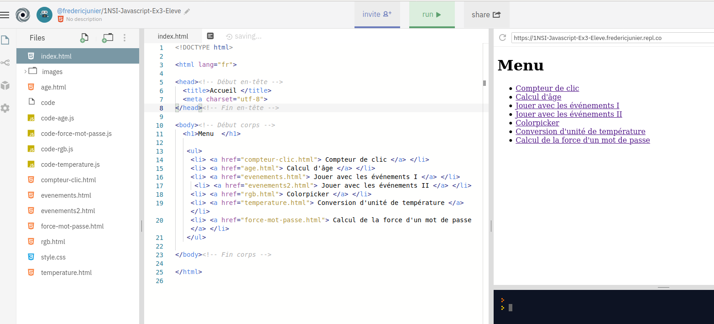

Ce cours est largement inspiré du chapitre 29 du manuel NSI de la collection Tortue chez Ellipse, auteurs : Ballabonski, Conchon, Filliatre, N’Guyen. J’ai également consulté le prepabac Première NSI de Guillaume Connan chez Hatier, la documentation en ligne de la fondation Mozilla https://developer.mozilla.org/fr/docs/Apprendre/JavaScript et le tutoriel de w3schools https://www.w3schools.com/js/default.asp.
Dans le chapitre précédent, on a présenté des exemples de pages Web dynamiques générées par des programmes en PHP ou Python. Chaque mise à jour de la page nécessite donc un nouveau cycle requête/réponse entre le client et le serveur. C’est indispensable s’il s’agit de modifier l’état d’une ressource côté serveur (une base de données par exemple), mais les changements peuvent n’être que temporaires et n’affecter que des éléments de la page côté client. C’est le cas de l’exemple déjà traité en PHP de la conversion d’unité pour une mesure de température.
Javascript est un langage interprété qui répond à ce besoin qui s’exécute dans le navigateur du client. Javascript s’est imposé depuis son apparition en 1995 dans le navigateur Netscape comme le principal langage de développement Web en frontend (côté client) et depuis une dizaine d’années, sa variante Node.js concurence les langages de développement backend (côté serveur) comme PHP ou Python.
Une page Web moderne, reçue par un client, comporte au moins trois composants logiciels :
F12 dans un navigateur, permet de visualiser et modifier les propriétés des éléments du DOM.L’environnement d’exécution d’un code Javascript est confiné à l’onglet de la page Web où il est chargé. Pour des raisons de sécurité il ne doit pas interagir avec d’autres pages ou des ressources du poste client. Par ailleurs, si on recharge la page auprès du serveur, l’environnement Javascript est réinitialisé et les modifications de la page effectuées par un code Javascript ne sont pas répercutées sur la page source disponible sur le serveur.
Le schéma ci-dessous illustre le fonctionnement du Javascript qui correspond à un paradigme de programmation événementielle.
Compléter ce tableau sur les opérateurs en Javascript à partir de la page https://developer.mozilla.org/fr/docs/Web/JavaScript/Guide/Expressions_et_Op%C3%A9rateurs.
| Opérateurs | Description |
|---|---|
= |
|
* |
|
/ |
|
** |
|
== ou === |
|
!= ou !=== |
|
&& |
|
|| |
|
! |
Ouvrir un nouvel onglet dans un navigateur Web.
Ouvrir la console Javascript dans la fenêtre des outils de développement avec F12 ou CTRL + SHIFT + K sous Firefox. On va exécuter de façon interactive, une séquence d’instructions Javascript pour présenter quelques constructions élémentaires et propriétés du langage. Chaque instruction pourra modifier l’état du DOM et donc le rendu graphique de la page Web.
On commence par quelques manipulations de variables et calculs :
>>> let a = 1
undefined
>>> (a * 3 + 1) ** 2 / 5 - 1
2.2
>>> (a * 3 + 1) ** 2 // commentaire !
16
>>> let b = "Hello"
undefined
>>> b + " World"
"Hello World"
>>> typeof(a)
"number"
>>> typeof(b)
"string"
>>> a = b + a
"Hello1"
>> typeof(a)
"string"CTRL + B et saisir le code ci-dessous :function valabs(x){
if (x < 0){
return -x;
}
else {
return x;
}
}
for (let i = -4; i < 5; i = i + 1){
if (valabs(i) > 2){
alert(i);
}
else {
console.log(i);
}
}alert affiche son paramètre dans (une fenêtre pop-up | la console) tandis que la fonction console.log affiche son paramètre dans (une fenêtre pop-up | la console).Javascript dispose de toutes les constructions permettant de progammer les mêmes algorithmes qu’en Python, mais s’il a été inventé par les développeurs de Netscape c’est pour manipuler les éléments HTML, à travers l’interface du DOM. Il existe plusieurs façons de capturer un élément HTML, la plus simple s’il s’agit d’un élément particulier est l’accès par son identifiant unique id (à condition qu’il soit défini).
Ouvrir un navigateur Web et charger la page https://frederic-junier.org/NSI/sandbox/bac.html. Le code source HTML de la page est donné ci-dessous :
<!DOCTYPE html>
<head>
<title> "Bac à sable" </title>
<meta charset="utf-8">
<body>
<ul id="langages">
<li> HTML </li>
<li> CSS </li>
</ul>
</body>
</html>>>> let list = document.getElementById("langages")
undefined
>>> list.style.color = "red"
"red"
>>> let item1 = list.children[0]
undefined
>>> item1
<li>
>>> item1.innerHTML = 'HTML5'
"HTML5"
>>> let item3 = document.createElement("li")
undefined
>>> list.appendChild(item3)
<li>
>>> item3.innerHTML = "Javascript"
"Javascript"CTRL + B puis saisir et exécuter le code ci-dessous. Survoler la liste ou cliquer dessus avec la souris et observer ce qui se passe dans la page. Caractériser le rôle de chaque instruction en vous appuyant sur la lecture de l’article https://developer.mozilla.org/fr/docs/Web/API/GlobalEventHandlers/onclick.function apparition(){
list.style.visibility = "visible";
}
function disparition(){
list.style.visibility = "hidden";
}
list.onmouseover = disparition ;
//le symbole ; est le séparateur d'instruction en Javascript
list.onmouseleave = apparition ;
list.onclick = function() { alert("Clic !") ; } ; //définition d'une fonction anonymeF5. L’environnement Javascript a-t-il été conservé ?Ouvrir un navigateur Web et accéder à la page https://frederic-junier.org/NSI/sandbox/compteur-clic.html.
On donne ci-dessous le code source de la page Web.
<!DOCTYPE html>
<html lang="fr">
<head><!-- Début en-tête -->
<title>Compteur de clics </title>
<meta charset="utf-8">
<!-- Début script JS -->
<script>
let compteur = 0;
function suivant(){
compteur = compteur + 1;
let v = document.getElementById("valeur");
if (compteur <= 1) {
v.innerHTML = compteur + " clic";
}
else {
v.innerHTML = compteur + " clics";
}
}
function reinitialiser(){
compteur = 0;
let v = document.getElementById("valeur");
v.innerHTML = compteur + " clic";
}
</script> <!-- Fin script JS -->
</head><!-- Fin en-tête -->
<body><!-- Début corps -->
<h1>Compteur de clics en Javascript </h1>
<button onclick="suivant();">Clic !</button>
<br>
<span id="valeur">0</span>
<br>
<button onclick="reinitialiser();">Réinitialiser !</button>
</body><!-- Fin corps -->
</html> On peut interagir avec la page en cliquant sur le bouton Clic ! puis réinitialiser le compteur en cliquant sur le bouton Réinitialiser.
Ouvrir l’onglet inspecteur dans la fenêtre des outils de développement et afficher la structure de la page comme ci-dessous.
event attachée au bouton de contenu Clic ! et déplier son contenu.
button, l’attribut onclick="suivant()" a défini une fonction Javascript function onclick(event) {suivant();} qui prend en paramètre un événement utilisateur (ici un click) et réagit en appelant la fonction suivant. La fonction suivant est appelée gestionnaire d’événement.suivant se trouve dans la balise <script>. Placée dans l’en-tête, celle-ci rassemble tout le code Javascript chargé dans la page.click se produit sur le premier élément <button>. En examinant le code de suivant, on voit qu’un lien est d’abord créé entre l’élément <span> d’identifiant "valeur" et une variable Javascript à l’aide d’une méthode DOM par l’instruction :La variable compteur est définie en dehors de suivant car c’est une variable globale. Les variables globales sont essentielles en Javascript, c’est l’un des défauts du langage.
Identifier et analyser de même le gestionnaire d’événement click qui est attaché au second élément <button>.
Ouvrir un navigateur Web et accéder à la page https://frederic-junier.org/NSI/sandbox/compteur-clic.html.
On arrive dans un environnement de développement Web en HTML/CSS/Javascript sur la plateforme https://repl.it.
L’interface se divise en trois zones :
À droite la fenêtre d’affichage du site et en-dessous une console Javascript.
Au centre l’éditeur avec le fichier courant.
À gauche l’explorateur de fichiers avec une séparation des trois composants logiciels nécessaires à l’affichage dans la fenêtre en haut à droite :
index.htmlscript.jsstyle.cssPar rapport à l’exemple précédent, le code Javascript est donc clairement séparé du code HTML. Le navigateur du client reçoit d’abord le code HTML. Pour charger le Javascript, on procède comme pour une feuille de style CSS en plaçant une balise de lien dans l’en-tête du fichier HTML :
L’attribut src donne le chemin vers le fichier contenant le code Javascript et l’attribut defer précise que le chargement du Javascript doit se faire après que la page HTML soit totalement chargée. En effet, Javascript peut modifier la page à travers l’interface DOM, donc il faut ordonnancer le chargement des différentes ressources. Des anciennes pratiques recommandaient ainsi de placer les balises <script> à la fin du code HTML. Des attributs comme defer permettent de gérer plus finement les priorités, surtout lorsque plusieurs scripts Javacript sont appelés.
On donne ci-dessous le code du fichier script.js :
let compteur = 0;
function suivant(){
compteur = compteur + 1;
let v = document.getElementById("valeur");
if (compteur <= 1) {
v.innerHTML = compteur + " clic";
}
else {
v.innerHTML = compteur + " clics";
}
}
function reinitialiser(){
compteur = 0;
let v = document.getElementById("valeur");
v.innerHTML = compteur + " clic";
}
let bouton_clic = document.getElementById("bouton_clic");
bouton_clic.addEventListener("click", suivant);
let bouton_reset = document.getElementById("bouton_reset");
bouton_reset.addEventListener("click", reinitialiser);Les définitions de la variable compteur et des gestionnaires d’événements suivant et reinitialiser sont identiques à celles du code de l’exemple 1. Ce qui change est la façon dont les gestionnaires sont attachés aux boutons. Prenons le bouton de Clic !, dans l’exemple 1 la liaison se faisait dans la balise HTML avec l’ajout de l’attribut onclick = "suivant()" alors qu’ici la liaison est déportée dans le fichier script.js avec :
L’architecture présentée dans l’exemple 2 est préférable car elle respecte un principe de séparation des composants logiciels selon leur fonctionnalité et facilite donc la lisibilité, la factorisation et la maintenance du code.
Il faut noter deux autres différences entre les méthodes des exemples 1 et 2 :
suivant (qui est une fonction) sont présentes dans <button onclick = "suivant()"> mais absentes dans bouton_clic.addEventListener("click", suivant);<button id="bouton_clic"> Clic !</button> se fait dans script.js grâce à l’identifiant id="bouton_clic" qui n’était pas nécessaire dans l’exemple 1 lorsque le gestionnaire était attaché directement à la balise.Javascript permet grâce à l’interface DOM d’attacher une fonction gestionnaire d’événement à un élément d’un document HTML.
Ce gestionnaire est lié à un événement, qui est une action de l’utilisateur (déplacement de la souris, pression sur une touche du clavier) ou une modification d’un autre élément du document.
Lorsque l’événement ciblé atteint l’élément surveillé par le gestionnaire, celui-ci le capture et délenche une action.
Pour attacher un gestionnaire d’événement nommé gestionnaire, à un élément, nommé element, et le lier à un événement, par exemple click,on peut procéder de deux façons :
script.js :Il existe plusieurs métodes pour cibler un élément HTML, nous utiliserons principalement le ciblage par identifiant unique id :
| Type de cible | Syntaxe |
|---|---|
Identifiant unique id |
document.getElementById('id') //retourne un élément |
| Classe CSS | document.getElementByClass('classname') //retourne une liste d'éléments |
Sélecteur CSS (par exemple titre h1) |
document.querySelector('h1') //retourne une liste d'éléments |
gest : directement dans l’élément HTML tag ou dans un fichier externe où la variable v désigne cet élément.| Événement | Signification | Gestionnaire interne | Gestionnaire externe |
|---|---|---|---|
click |
dispositif de pointage pressé sur l’élément | <tag onclick="gest()"> |
v.addEventListener('click', gest) |
mouseover |
dispositif de pointage déplacé sur l’élément | <tag onmouseover="gest()"> |
v.addEventListener('mouseover', gest) |
mouseout |
dispositif de pointage déplacé hors de l’élément | <tag onmouseout="gest()"> |
v.addEventListener('mouseover', gest) |
keydown |
une touche du clavier est pressée | <tag onkeydown="gest()"> |
v.addEventListener('keydown', gest) |
keydown |
une touche du clavier est pressée | <tag onkeydown="gest()"> |
v.addEventListener('keydown', gest) |
input |
à chaque changement de valeur réalisé par l’utilisateur dans <input> ou <select> |
<tag oninput="gest()"> |
v.addEventListener('input', gest) |
Ouvrir un navigateur Web et accéder à la page https://repl.it/@fredericjunier/1NSI-Javascript-Ex3-Eleve.
On arrive dans un environnement de développement Web en HTML/CSS/Javascript sur la plateforme https://repl.it.

La page d’accueil contient une liste de liens vers des pages dynamiques qui contiennent ou sont liés à des codes Javascript à compléter. À une exception près, ces activités présentées ont déjà été implémentés à l’aide de formulaires et de scritps côté serveur dans le chapitre précédent. Ici l’interactivité sera assurée côté client par Javascript.
Depuis la page d’accueil, suivre le lien vers l’activité Calcul d’âge de la page age.html.
Quel élément HTM a reçu un gestionnaire d’événement ? Quel événement est surveillé ?
Compléter le code Javascript dans le fichier code-age.js afin que la page puisse calculer l’âge de l’utilisateur à partir de sa date de naissance?
Revenir sur la page d’accueil et suivre le lien vers l’activité Jouer avec les événements I. Compléter le code Javascript qui se trouve dans l’en-tête du fichier evenements.html pour :
attacher un gestionnaire d’événement click à l’élément d’identifiant titre
un clic sur cet élément doit déclencher l’apparition d’une fenêtre pop-up avec le message “Attention, je peux griffer !”
Revenir sur la page d’accueil et suivre le lien vers l’activité Jouer avec les événements II. Compléter le code Javascript qui se trouve dans l’en-tête du fichier evenements2html pour :
attacher un gestionnaire d’événement click à l’élément img d’identifiant chat
un clic sur cet élément doit déclencher le changement de sa propriété src, qui doit prendre pour valeur le chemin “images/chat-bonjour.png”, ainsi un clic sur l’image devra provoquer son changement.
Revenir sur la page d’accueil et suivre le lien vers l’activité Colorpicker. La page rgb.html propose d’afficher une couleur dans un carré à partir de ses composantes (R,G,B). Le code Javascript se trouve dans le fichier code-rgb.js.
Quel élément HTM a reçu un gestionnaire d’événement ? Quel événement est surveillé ?
Compléter le code Javascript qui se trouve dans le fichier code-rgb.js pour rendre la page rgb.html fonctionnelle.
Revenir sur la page d’accueil et suivre le lien vers l’activité Conversion d’unité de température. La page temperature.html propose de convertir une mesure de température de Celsius en Fahrenheit ou réciproquement. Le code Javascript se trouve dans le fichier code-temperature.js.
Quel élément HTM a reçu un gestionnaire d’événement ? Quel événement est surveillé ?
Compléter le code Javascript qui se trouve dans le fichier code-temperature.js pour rendre la page temperature.html fonctionnelle.
Revenir sur la page d’accueil et suivre le lien vers l’activité Calcul de la force d’un mot de passe. La page force-mot-passe.html propose de tester la force d’un mot de passe en fonction de son nombre de caractères et de la taille de l’alphabet où sont choisis les caractères.
Le code Javascript se trouve dans le fichier code-force-mot-passe.js.
Tester d’abord le formulaire de l’ANSSI qui a inspiré cette activité : https://www.ssi.gouv.fr/administration/precautions-elementaires/calculer-la-force-dun-mot-de-passe/.
Quel élément HTM a reçu un gestionnaire d’événement ? Quel événement est surveillé ?
Compléter le code Javascript qui se trouve dans le fichier code-force-mot-passe.js pour rendre la page force-mot-passe.html fonctionnelle.

QCM de type E3C2.
On souhaite qu’un menu apparaisse à chaque fois que l’utilisateur passe sa souris sur l’image de bannière du site. L’attribut de la balise img dans lequel on doit mettre un code Javascript à cet effet est :
onclicksrcaltonmouseoverLors de la consultation d’une page HTML contenant un bouton auquel est associée la fonction suivante, que se passe-t-il quand on clique sur ce bouton ?
Parmi les propriétés suivantes d’une balise <button> dans une page HTML, laquelle doit être rédigée en langage JavaScript ?
nametypeonclickidDans une page HTML, lequel de ces codes permet la présence d’un bouton qui appelle la fonction javascript afficher_reponse() lorsque l’utilisateur clique dessus ?
<a href="afficher_reponse()">Cliquez ici</a><button if_clicked="afficher_reponse()">Cliquez ici</button><button value="Cliquez ici"><a>afficher_reponse()</a></button><button onclick="afficher_reponse()">Cliquez ici</button>Quel est le nom de l’événement généré lorsque l’utilisateur clique sur un bouton de type button dans une page HTML ?
actionmousesubmitclickUn navigateur affiche la page HTML suivante :
<html lang="fr">
<head>
<meta charset="utf-8">
<link rel="stylesheet" href="style.css">
<title>Un bouton</title>
</head>
<body>
<button onclick="maFonction()">Cliquer ici</button>
</body>
<script src="script.js"></script>
</html>Lorsque l’on clique sur le bouton, l’action déclenchée par maFonction() est définie :
style.cssscript.jsVoici un extrait d’une page HTML :
<script>
function sommeNombres(formulaire) {
var somme = formulaire.n1.value + formulaire.n2.value;
console.log(somme);
}
</script>
<form>
Nombre 1 : <input name="n1" value="30"> <br>
Nombre 2 : <input name="n2" value="10"> <br>
<input type="button" value="Somme"
onclick="sommeNombres(this.form)">
</form>Quand l’utilisateur clique sur le bouton Somme, le calcul de la fonction sommeNombre() se fait :
On considère cet extrait de fichier HTML représentant les onglets d’une barre de navigation :
function BoutonGris() {
var btn = document.createElement(\"BUTTON\");
btn.innerHTML = \"Annulation\";
document.getElementById(\"DIV\").appendChild(btn);
}